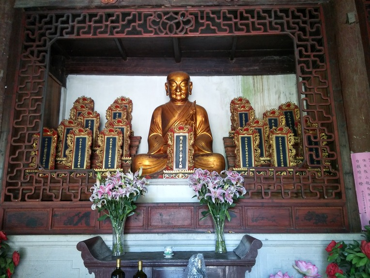
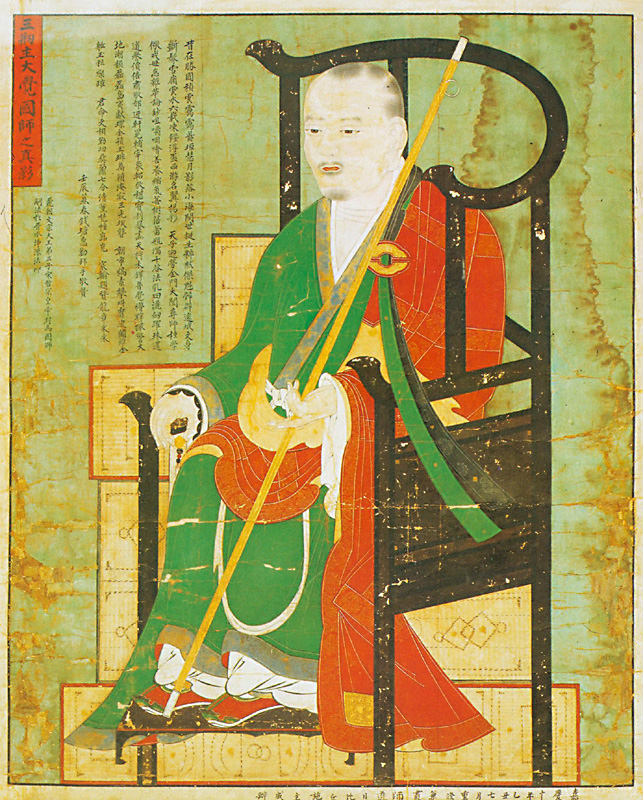
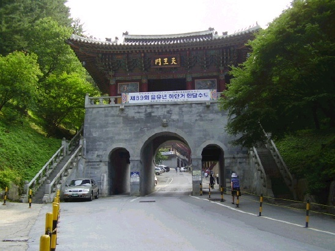

천태종 소개

△ 중국 천태산 국청사
1097년(숙종 2) 대각국사(大覺國師) 의천(義天)에 의하여 창종(創宗)되었다. 천태종은 원래 중국불교 13종 중 가장 대표적인 종파의 하나로, 수나라의 지의(智顗)가 『법화경(法華經)』을 중심으로 천태교학(天台敎學)을 완성시킴으로써 창종되었다. 그는 천태종의 종조(宗祖)를 인도의 용수(龍樹)로 삼았고, 중국 제1조(祖)는 북제(北齊)의 혜문(慧文)을, 제2조는 그의 스승 혜사(慧思)로 삼았으며, 그 자신은 제3조가 되었다.
중국에서 이루어진 천태교학이 우리나라에 전하여진 것은 고려의 대각국사가 천태종을 창종하기 훨씬 이전인 삼국시대부터였다. 백제의 현광(玄光)은 중국으로 건너가서 천태 제2조인 혜사의 지도를 받아 법화삼매(法華三昧)를 증득(證得)하고 스승의 인증(印證)을 얻어 귀국한 뒤, 고향인 웅주옹산(翁山)에서 자신이 증득한 법화삼매와 스승으로부터 배운 『법화경』의 진리를 많은 사람들에게 널리 전하였다.
신라의 연광(緣光)도 수나라로 들어가서 지의의 지도를 받아 큰 깨달음을 얻었으며, 그 역시 본국인 신라로 돌아와서 천태교학과 『법화경』의 진리를 전하는 데 힘을 기울였다. 또, 신라의 법융(法融)·이응(理應)·순영(純英)은 당나라에 건너가서 천태종의 제8조 좌계현랑(左溪玄朗)으로부터 천태교법(天台敎法)을 얻고, 730년(성덕왕 29) 귀국하여 교법을 전하는 데 힘썼다.
고려 초 광종 때에는 중국 오월(吳越)의 왕이 사신을 보내어서 천태관계의 전적(典籍)을 얻고자 하였으므로, 제관(諦觀)으로 하여금 고려에 있던 천태종 관계서적들을 전하게 하여 침체되었던 중국의 천태종 부흥에 크게 기여하였다.
[네이버 지식백과] 천태종 [天台宗] (한국민족문화대백과, 한국학중앙연구원)

△ 고려 대각국사 의천
또한, 제관과 같은 때의 인물로 『화엄경』과 『기신론(起信論)』을 공부하고 중국으로 건너가 천태종의 제16조가 된 의통(義通)도 고려의 고승이었다. 그는 제관과 더불어 송나라의 천태종을 중흥시켰고, 그 법맥(法脈)은 지례(知禮)―범진(梵臻)―종간(從諫)의 순으로 이어졌으며, 고려의 대각국사는 종간으로부터 천태교법을 전수받고 귀국하여 천태종을 창종한 것이다.
대각국사는 본래 화엄종(華嚴宗)의 승려였으나 이 땅에 천태종이 성립되지 않았음을 개탄하다가 송나라에 들어가서 당시 중국의 모든 교파와 학종(學宗)을 두루 살피고 섭렵하면서 천태교학에 몰두하였다. 그는 종간으로부터 천태교학을 배운 뒤 천태종의 완성자인 지의의 탑(塔)을 참배하면서, 귀국하면 고려에 꼭 천태교학을 펼칠 것을 서원한 바 있었다.
귀국한 지 12년 뒤인 1097년 그를 위하여 세워진 국청사(國淸寺)의 주지로 취임하여 천태종을 창종하고 천태교학을 강의하였는데, 이 때 1,000명이 넘는 학승(學僧)들이 모여 들어 배움을 구하였다. 2년 후인 1099년 천태종 자체에서 행한 첫 승선(僧選)을 행하였고, 1101년 국가의 주관 아래 천태종의 대선(大選)인 천태선(天台選)이 시행됨에 따라 국가의 공인을 받은 한 종파로 성립되었다.
대각국사는 선교(禪敎)의 대립을 융화하고 통화종단(統和宗團)을 구현하고자 『법화경』의 회삼귀일사상(會三歸一思想)에 근거한 교관겸수(敎觀兼修)의 사상을 높이 제창하고, 천태종을 창종한 것이다. 그 당시의 천태종은 개성의 국청사를 중심으로 오대산(五臺山)·수암산(水巖山)·조연산(槽淵山)·안락산(安樂山)·마리산(瑪璃山)·남숭산(南崇山) 등 전국에 6대 본산(本山)을 두어 천태교학을 널리 전파하였다.
대각국사의 뒤를 이어 천태종을 이끈 승려는 160여 명에 달하고 있으나 가장 대표적인 승려는 교웅(敎雄)이다. 구산문(九山門)의 선종 승려였던 그는 대각국사가 국청사에서 천태교학을 설할 때 가르침을 받고 천태종 승려가 되었으며, 최초의 천태종 대선에서 상상품(上上品)에 합격하여 그의 제자 덕소(德素)와 함께 대각국사 이후 천태종을 크게 발전시켰다.
[네이버 지식백과] 천태종 [天台宗] (한국민족문화대백과, 한국학중앙연구원)

△ 대한불교 천태종 소백산 구인사
또한, 덕소의 문하에서 승지(承智)와 재사(再思) 등 1,200여 명의 제자가 배출되어 천태종을 크게 떨치게 하였으나, 그 뒤에는 다소 침체되었다. 한때 침체된 천태종을 다시 중흥시킨 인물은 요세(了世)이다. 그는 1208년(희종 4) 월생산(月生山) 약사사(藥師寺)에서 천태교학을 익혀 크게 깨달은 바가 있었다. 그 때부터 강의와 설법을 하며 매일 53존불(尊佛)에 각각 12번씩의 절을 하면서 참회하였다.
1216년(고종 3) 만덕산(萬德山) 백련사(白蓮社)로 자리를 옮겨 천태종 중흥에 힘썼으며, 1232년 보현도량(普賢道場)을 열어 전통적인 법화삼매의 수행을 지도하였다. 그때 이 결사(結社)에 참석한 자들은 매일 『법화경』을 한 번 독송하고, 준제신주(准提神呪)를 1,000번, 아미타불(阿彌陀佛)을 1만 번 부르는 것을 일과로 삼았다.
또, 그는 천태종의 가장 중요한 천태삼대부(天台三大部:지의의 法華文句·法華玄義·摩訶止觀)를 요긴하게 간추려서 삼대부 절요(節要)를 만들어 천태교학을 널리 전파하였다. 요세의 뒤를 이은 천인(天因)과 천책(天頙) 등의 제자들과 그의 법손(法孫)들은 백련사를 중심으로 하여 천태종풍을 널리 선양하였다. 개성의 국청사에 중심을 두었던 천태종이 요세 이후에는 전라남도 강진(康津) 백련사로 중심이 옮겨져 새롭게 확장을 본 것이다.
조선시대에는 태조가 그의 건국을 기념하기 위하여 1392년 큰 법회를 베풀었을 때 현견(玄見) 등 천태종의 대덕(大德) 330여 명을 참석하게 하였고, 1394년(태조 3) 천태종의 고승 조구(祖丘)를 국사(國師)로 삼았다. 태조의 보호 아래 천태종은 다시 활기를 되찾았고, 많은 고승들이 배출되었다.
그런데 1406년(태종 6) 3월 의정부계청(議政府啓請)에는 11개 종파 이름이 보이는데, 거기에 천태소자종(天台疏字宗)과 천태법사종(天台法事宗)의 이름이 들어 있어 천태종이 둘로 나누어졌음을 알 수 있으나 언제 두 종파로 갈라졌는지는 알 수 없다. 이 두 종파는 1407년 초 다시 조정에 의하여 하나의 천태종으로 합쳐지게 되었다.
그러나 천태종은 1424년(세종 6) 또다시 조계종(曹溪宗)·총남종(摠南宗)과 함께 선종이라는 이름으로 합쳐졌다. 당시 천태종 마지막 고승인 판천태종사(判天台宗事) 행호(行乎)는 황폐해진 백련사를 중창하여 천태종의 중흥을 도모하였으나, 그 뒤 천태종은 다시 중흥을 보지 못하였다.
[네이버 지식백과] 천태종 [天台宗] (한국민족문화대백과, 한국학중앙연구원)